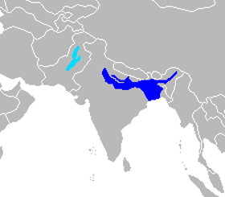
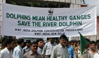

Physical Description
The South Asian river dolphin has the long, pointed nose characteristic of all river dolphins.The species does not have a crystalline eye lens, rendering it effectively blind, although it may still be able to detect the intensity and direction of light. Navigation and hunting are carried out using echolocation. The dolphins are on the smaller at around 2.5m. Their skin color is a greyish brown.
Habitat
The Ganges River dolphin, or susu, inhabits the Ganges-Brahmaputra-Meghna and Karnaphuli-Sangu river systems of Nepal, India, and Bangladesh. This vast area has been altered by the construction of more than 50 dams and other irrigation-related projects, with dire consequences for the river dolphins.
Endangered Status
Both subspecies have been very adversely affected by human use of the river systems in the subcontinent. Entanglement in fishing nets can cause significant damage to local population numbers. Some individuals are still taken each year and their oil and meat used as a liniment, as an aphrodisiac, and as bait for catfish. Irrigation has lowered water levels throughout both subspecies' ranges. Poisoning of the water supply from industrial and agricultural chemicals may have also contributed to population decline. Perhaps the most significant issue is the building of more than 50 dams along many rivers, causing the segregation of populations and a narrowed gene pool in which dolphins can breed
